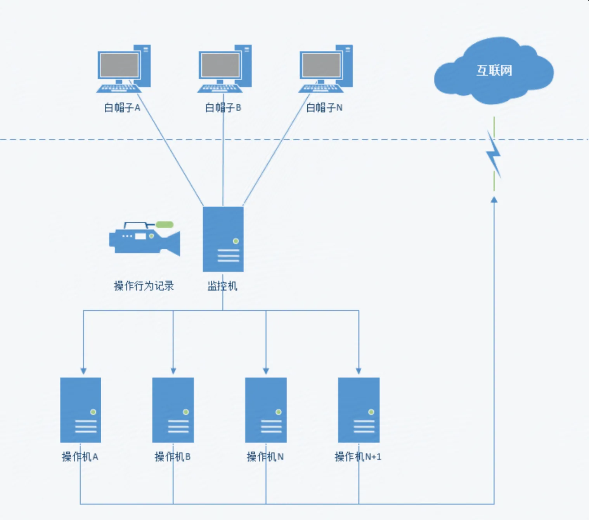
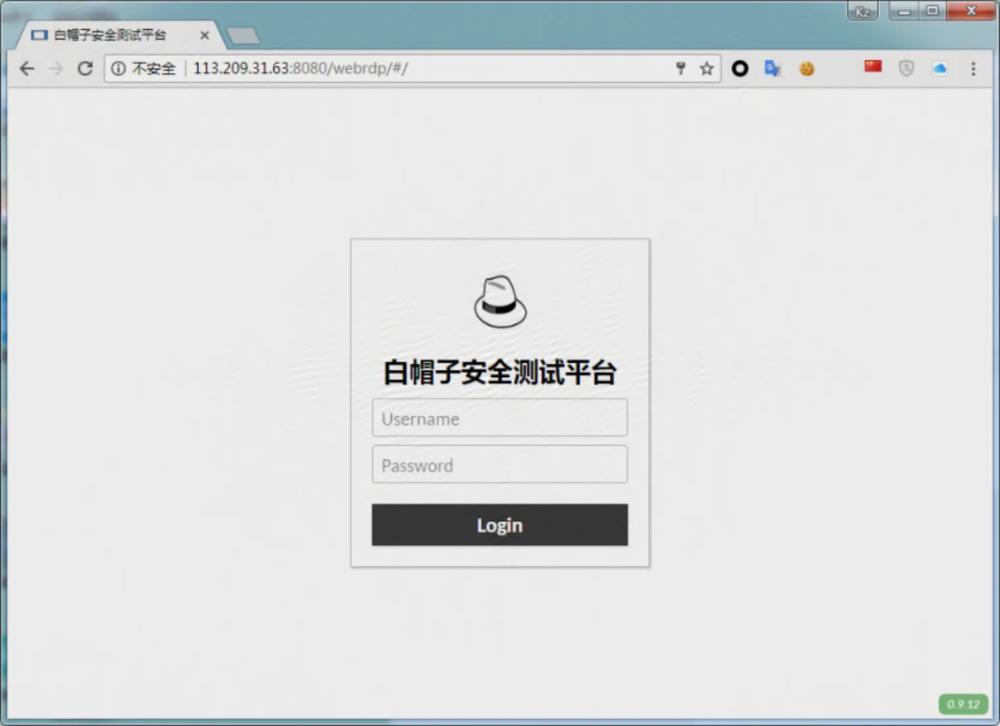
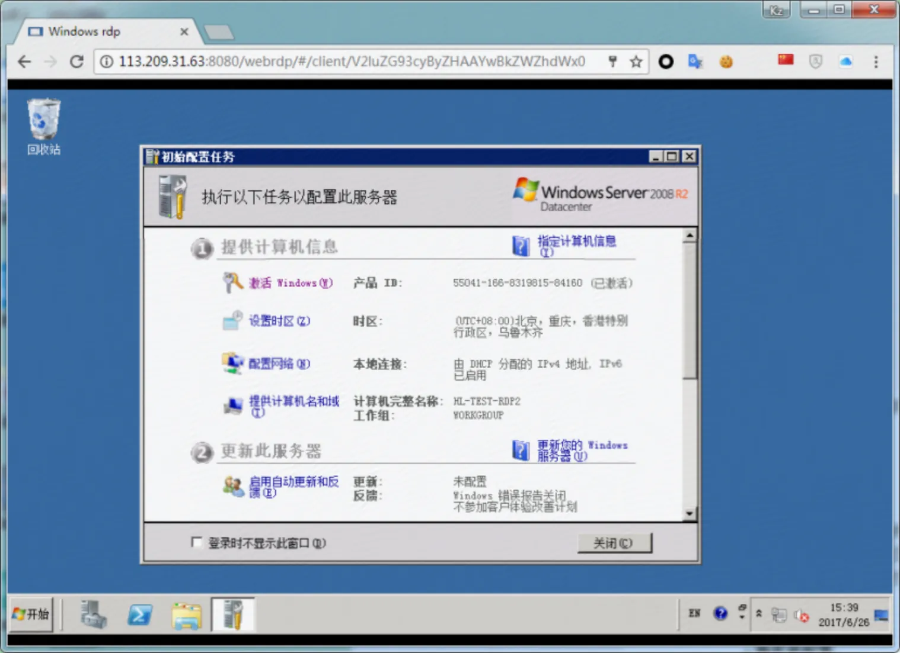
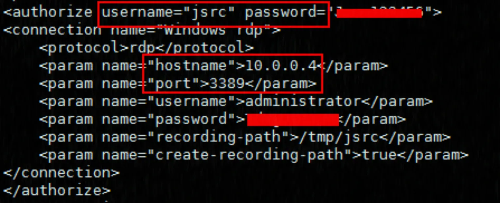
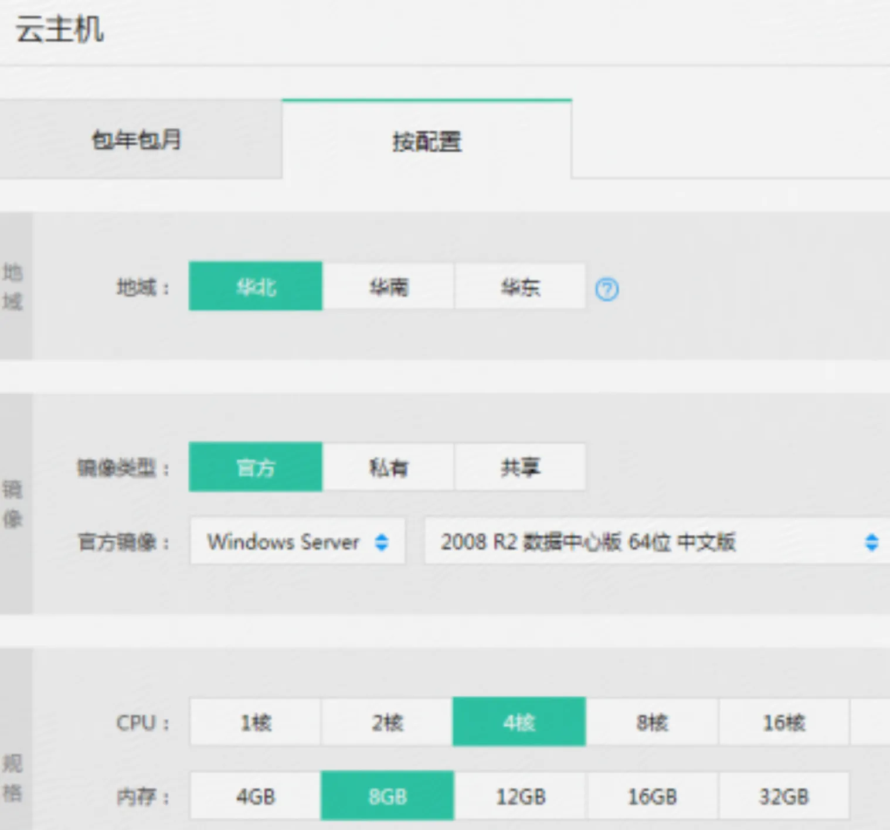
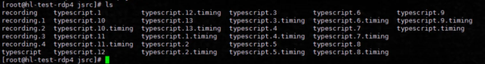
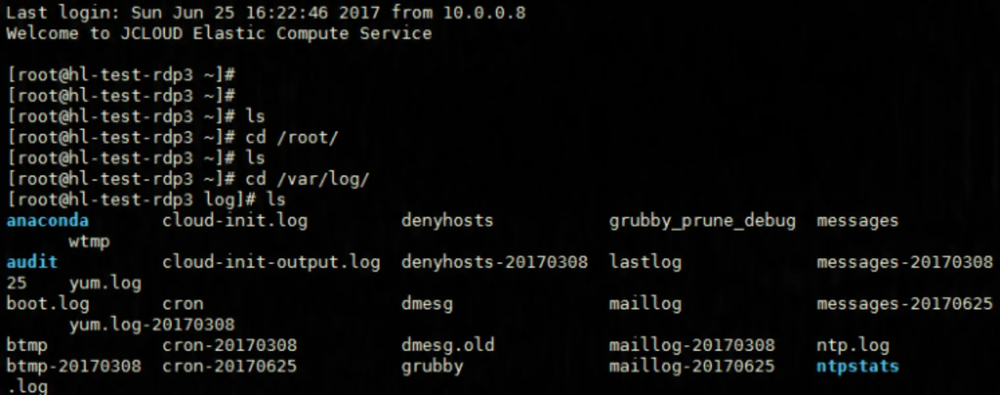
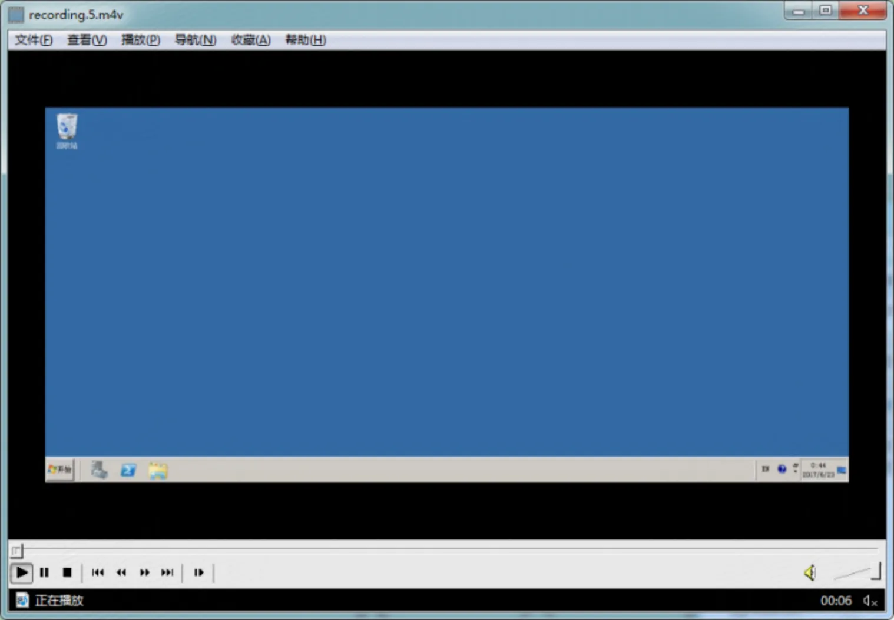
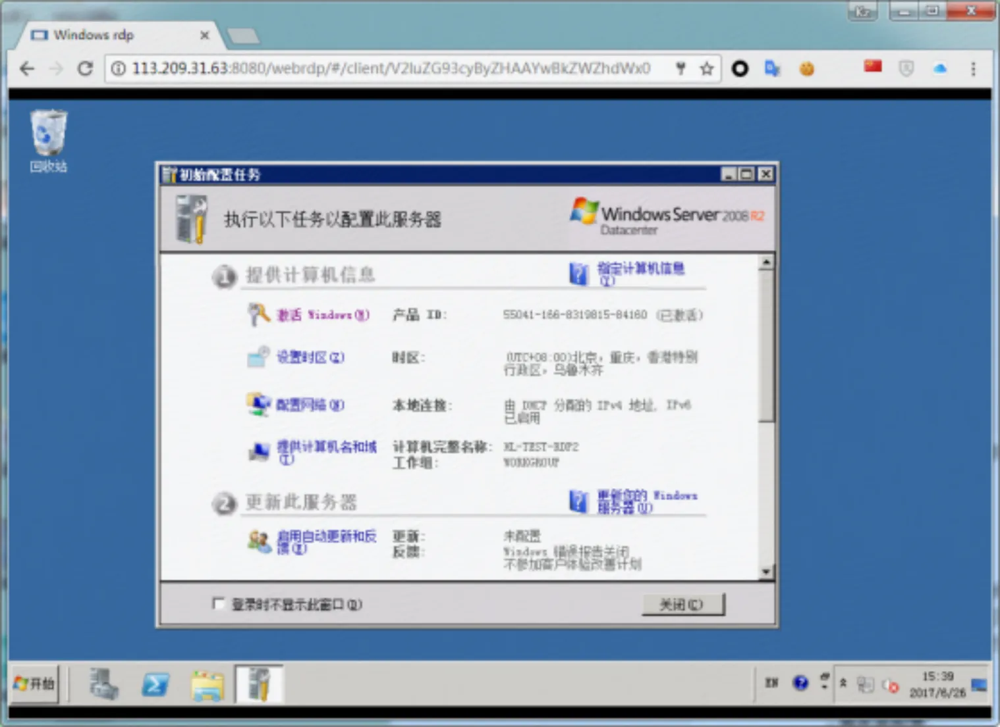

白帽子渗透行为监控方案
对于白帽子行为监控方案，一般常用的技术手段是 VPN 加上跳板机。VPN 是帮助外部白帽子能够 VPN 拨入到客户的内部网络，对不接入公网的内部系统进行访问。确保内部系统不直接对公网开放。如果是放在公网上的系统，不能限制路由，VPN 的方案不适用。
监控白帽子的行为，现有两种可能的方案，需要评估哪种更可行：
1.批量生成云主机，把云主机账户给到白帽子使用，白帽子通过分配的云主机对目标系统进行漏洞挖掘。需要在分配给白帽子的云主机上，实现自动操作命令的收集，并且这些 log 不存在本地，实时送到目标 Log 日志服务器上。需要进行操作系统内核编译，禁止白帽子对日志进行修改的权限。
2.提供一台跳板机给所有白帽子，通过跳板机跳到分配给白帽子的云主机上，白帽子从云主机发起对目标客户的扫描和漏洞分析。需要在跳板机上记录所有白帽子的操作，跳板机自动跳转到分配给白帽子的云主机上，白帽子可以利用云主机进行安全扫描工具的下载与渗透侦测。
对比两种白帽子行为监控模式
独立主机监控模式
- 优势：拓扑简单，部署简单，单台云主机完成全部监控，将日志发送到日志服务器
拥有独立公网 IP 地址，可以进行反弹后门操作，通过 IP 区分不同白帽子
- 劣势：由于白帽子测试需要 root 权限，能够完全控制操作系统，同时也能绕过监控手段
拥有独立公网 IP 地址，可以建立隧道，绕过监控，在未监控的主机上操作
- 可行性：由于白帽子拥有最高权限，所以需要花费大量精力防止绕过，开发工作量大，时间长
（例如本地记录篡改、内核模块监控、防止远程隧道、修改路由日志服务不可用）
（内核审计方向[复杂+难绕过]、bash 审计方向[简单+用户约束]）
透明跳板机模式
优势：白帽子在进入操作机的时候，已经通过了一层透明的跳板机，在跳板机记录行为，无感知无法篡改。只有内网 IP 地址，能够通过 nat 上网，不能建立隧道。不需开发监控程序，跳板机完成监控记录
劣势：需要一个跳板机、操作机、NAT 网络的拓扑结构，共用外网 IP 地址。只有内网 IP 地址，一些测试和工具无法使用。
可行性：环境搭建维护工作量大，时间较短。
1.拓扑结构

2.行为记录方案
2.1 白帽子监控过程
白帽子通过浏览器访问监控机，输入账号密码进行登录

登录成功后，自动跳转到操作机，监控机记录白帽子行为，无感知无法篡改

2.2 账号开通流程
确定参与测试白帽子的数量、时间、用户 ID 和需要开通的操作系统类型
在监控机手动配置开通用户 ID 的使用权限，绑定云主机，分配密码

- 手动创建相应数量的操作机（云主机），分配操作系统、内存、CPU 和 IP 地址

2.3 事后溯源记录
监控机记录下，白帽子的全部操作行为，操作监控记录文件，如下：

Linux 回放：

Windows 回放：

2.4 行为记录存储
根据合同要求，白帽子行为记录，需要保存的时间。
目前单个云盘最大支持 3TB 存储，24 小时监控录像估算占用 1G 磁盘
2.5 访问控制
每台主机都配置了公网 IP 地址，可以绕过监控机直连测试机，或者使用公网 IP 做转发，所以只允许出流量，禁止入方向流量。
3.方案成本
3.1 监控机(云主机)价格
Centos 6.5 8 核 12G 内存 30Mbps 带宽 ￥130/天
3.2 操作机(云主机)价格
Windows 2008 4 核 8G 内存 5Mbps 独立 IP ￥30/天/台
Centos 6.5 2 核 4G 内存 5Mbps 独立 IP ￥20/天/台
4.白帽子测试机使用方法
4.1 安全测试平台：(仅活动期间开放)
网址：http://1.1.1.1:8080/webrdp/ 输入账号和密码。
4.2 操作使用：（注意：退出测试机，请直接关闭浏览器窗口）
白帽子通过浏览器访问测试机，输入账号密码进行登录
登录成功后，自动跳转到测试机，开始对目标网站进行安全测试。
